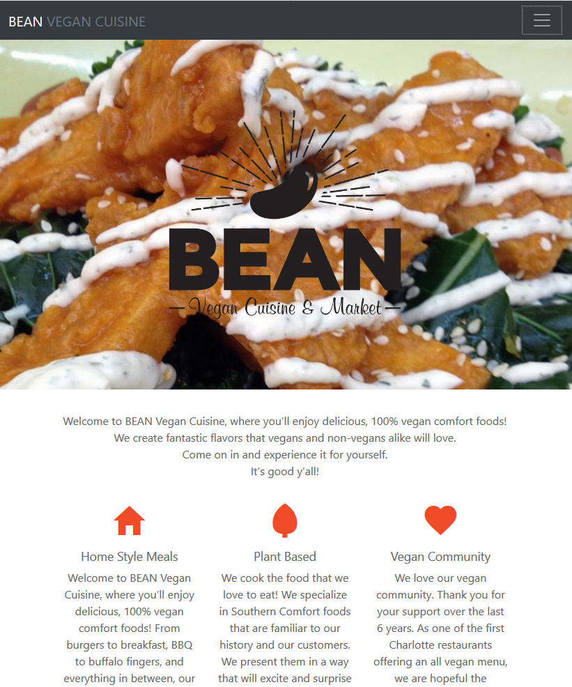
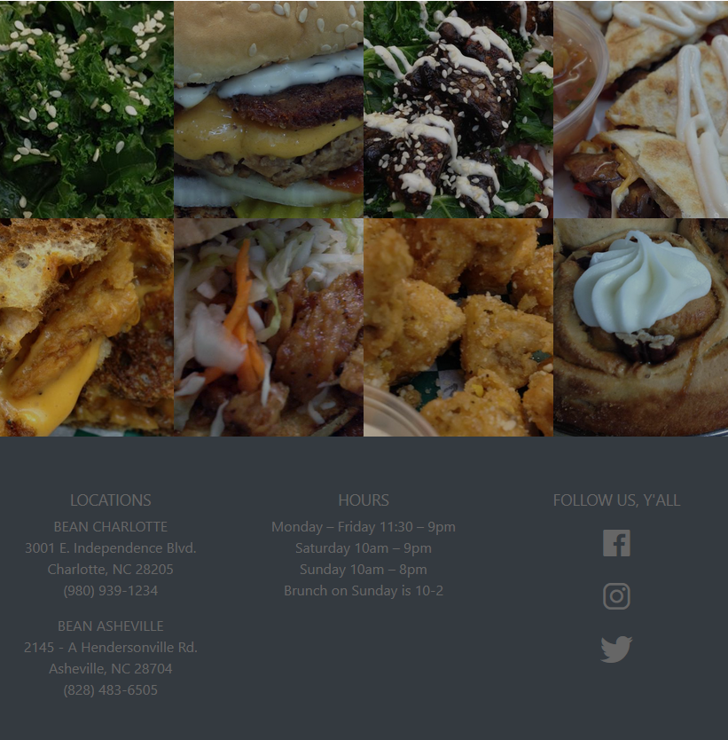
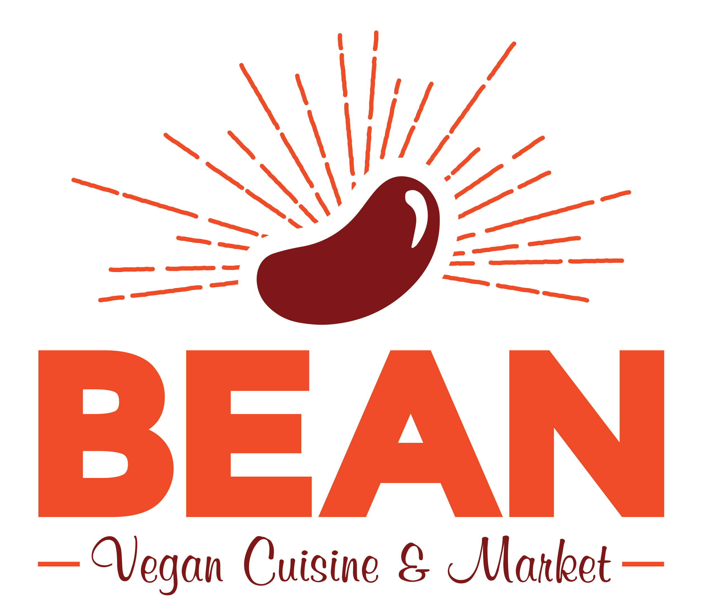

Bean Vegan Cuisine needed a refresh of their outdated website. They wanted something low fuss, and easily responsive. They had been working with two separate websites, and I offered to help them by building one responsive site, accessible from all devices. This was my first project to fully dive into Bootstrap. As for the design, it began with a logo makeover. Scroll to the bottom for the before and after of that portion of the project. I let the new logo design guide me in the look for the new site. I went bright and hip, letting the food speak for itself.
 I used a basic Bootstrap jumbotron/3 column layout for this site. The content was mostly focused on information about the restaurant, and the menu. There is a responsive grid of photos at the bottom of the main page, followed by their contact info.
Fully responsive, the menu columns collapse into 2 rows, then a single row. Nothing fancy, but definitely a perfect project to use Bootstrap.
As promised, the logo transformation.